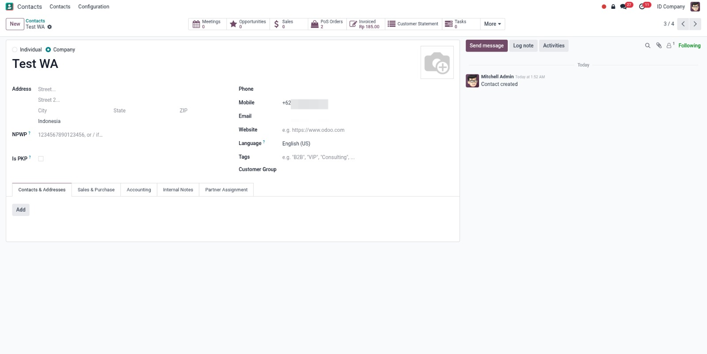
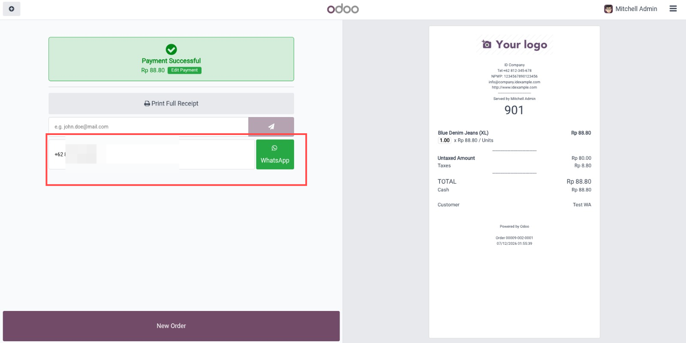
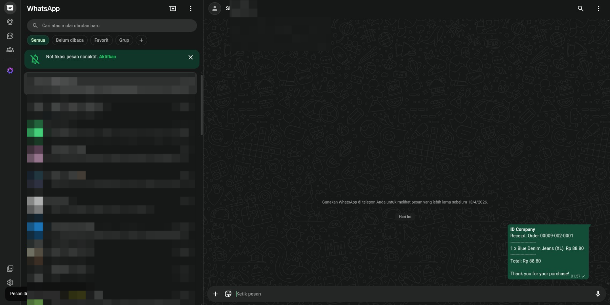

Adds a WhatsApp button beside the POS receipt sending tools on the Payment Successful screen.
Keeps only digits and replaces a leading zero with the customer or company country code when available.
Creates a clean receipt text with company name, receipt number, products, quantities, line totals, and order total.
This flow shows how the cashier prepares the customer phone number, sends the receipt from POS, and gets a ready WhatsApp message.

Save the customer's mobile number on the contact form. The POS receipt screen can use this number automatically after the customer is selected on the order. If the number starts with a local zero, the module can convert it using the customer or company country code.

After payment validation, the Payment Successful screen shows a phone input and a WhatsApp button beside the receipt tools. The cashier can confirm or edit the number before opening WhatsApp.

WhatsApp Web opens with a prepared receipt summary. The message includes company name, receipt reference, product lines, quantities, line totals, total amount, and a thank you message. The cashier only needs to review and send.
1. Open a POS session.
2. Select a customer if you want the phone number to be prefilled from the customer mobile.
3. Process the payment and reach the Payment Successful screen.
4. Confirm or edit the WhatsApp number in the phone field.
5. Click the WhatsApp button. WhatsApp opens with the receipt summary ready to send.
Note: this module sends WhatsApp text only. It does not auto attach PDF files because it uses click-to-chat and does not require WhatsApp API credentials.